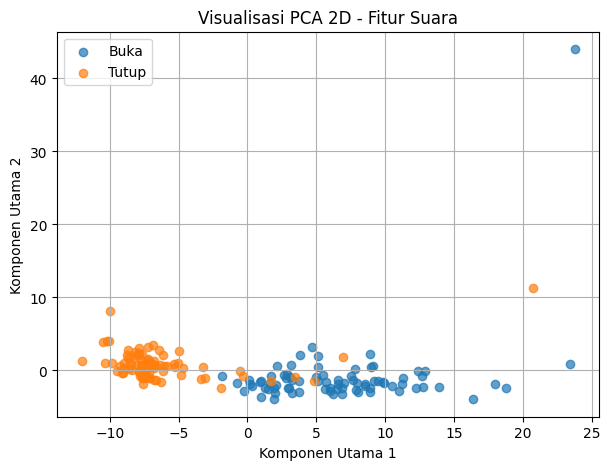
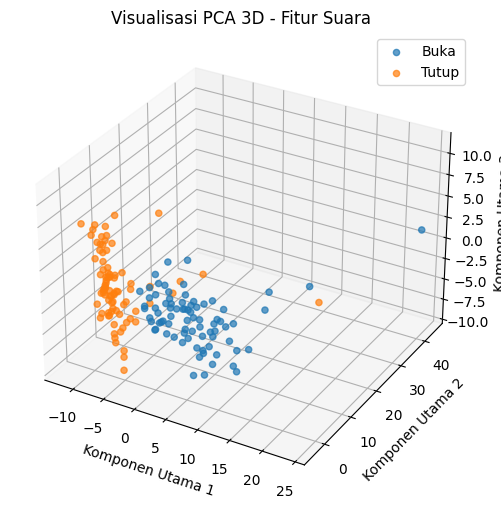
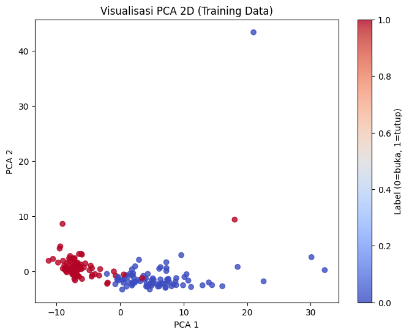
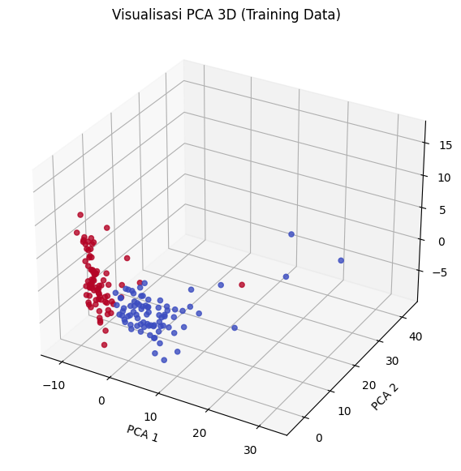

Voice Detection#
import os
import numpy as np
import librosa
import tsfel
import pandas as pd
from sklearn.model_selection import train_test_split
from sklearn.preprocessing import StandardScaler
from sklearn.decomposition import PCA
from sklearn.neighbors import KNeighborsClassifier
from sklearn.metrics import accuracy_score, classification_report
import matplotlib.pyplot as plt
from mpl_toolkits.mplot3d import Axes3D
import joblib
---------------------------------------------------------------------------
ModuleNotFoundError Traceback (most recent call last)
Cell In[1], line 11
9 from sklearn.neighbors import KNeighborsClassifier
10 from sklearn.metrics import accuracy_score, classification_report
---> 11 import matplotlib.pyplot as plt
12 from mpl_toolkits.mplot3d import Axes3D
13 import joblib
ModuleNotFoundError: No module named 'matplotlib'
# === Folder data ===
buka_path = "data/voice/buka-voice"
tutup_path = "data/voice/tutup-voice"
# === Load konfigurasi fitur TSFEL ===
cfg = tsfel.get_features_by_domain() # semua domain: temporal, spectral, statistical
# === Fungsi ekstraksi fitur dengan TSFEL ===
def extract_features_tsfel(file_path):
# Load audio
y, sr = librosa.load(file_path, sr=None)
# Pastikan durasi tidak terlalu pendek
if len(y) < sr:
y = np.pad(y, (0, sr - len(y)))
# Ekstraksi fitur dengan TSFEL
features = tsfel.time_series_features_extractor(cfg, y, fs=sr, verbose=0)
# Ambil rata-rata dari setiap fitur agar menjadi satu baris data
features_mean = features.mean().to_frame().T
return features_mean
# === Persiapan data ===
X, y = [], []
print("🔍 Mengekstrak fitur dari folder 'buka-voice' ...")
for file in os.listdir(buka_path):
if file.endswith(".mp3"):
file_path = os.path.join(buka_path, file)
features = extract_features_tsfel(file_path)
X.append(features)
y.append(0)
print("🔍 Mengekstrak fitur dari folder 'tutup-voice' ...")
for file in os.listdir(tutup_path):
if file.endswith(".mp3"):
file_path = os.path.join(tutup_path, file)
features = extract_features_tsfel(file_path)
X.append(features)
y.append(1)
🔍 Mengekstrak fitur dari folder 'buka-voice' ...
🔍 Mengekstrak fitur dari folder 'tutup-voice' ...
X = np.array(X)
y = np.array(y)
# === Split data untuk training dan testing ===
X_train, X_test, y_train, y_test = train_test_split(X, y, test_size=0.2, random_state=42)
# === Normalisasi ===
scaler = StandardScaler()
X_train_scaled = scaler.fit_transform(X_train)
X_test = scaler.transform(X_test)
[[4.05262665e+02 7.44337818e-02 1.10000000e+01 ... 1.68264629e-03
4.44990018e-04 7.75000000e+03]
[1.08869456e+03 9.69186403e-02 1.30000000e+01 ... 2.29991717e-03
5.54476208e-04 7.31200000e+03]
[1.94248253e+02 4.50505102e-02 1.60000000e+01 ... 1.06309256e-03
3.25874603e-04 6.35600000e+03]
...
[1.92249170e+02 2.82727582e-02 2.10000000e+01 ... 4.27927661e-04
1.44763860e-04 7.48800000e+03]
[2.33947466e+03 1.21908520e-01 2.10000000e+01 ... 2.20849142e-03
6.82708095e-04 7.34200000e+03]
[5.19980689e+02 5.22316571e-02 2.00000000e+01 ... 4.95847142e-04
1.31211480e-04 6.02800000e+03]]
# ==================================================
# 🔹 PCA 2D
# ==================================================
pca_2d = PCA(n_components=2)
X_pca_2d = pca_2d.fit_transform(X_train_scaled)
plt.figure(figsize=(7, 5))
plt.scatter(
X_pca_2d[y_train == 0, 0],
X_pca_2d[y_train == 0, 1],
label="Buka",
alpha=0.7
)
plt.scatter(
X_pca_2d[y_train == 1, 0],
X_pca_2d[y_train == 1, 1],
label="Tutup",
alpha=0.7
)
plt.title("Visualisasi PCA 2D - Fitur Suara")
plt.xlabel("Komponen Utama 1")
plt.ylabel("Komponen Utama 2")
plt.legend()
plt.grid(True)
plt.show()

# ==================================================
# 🔹 PCA 3D
# ==================================================
from mpl_toolkits.mplot3d import Axes3D
pca_3d = PCA(n_components=3)
X_pca_3d = pca_3d.fit_transform(X_train_scaled)
fig = plt.figure(figsize=(8, 6))
ax = fig.add_subplot(111, projection='3d')
ax.scatter(
X_pca_3d[y_train == 0, 0],
X_pca_3d[y_train == 0, 1],
X_pca_3d[y_train == 0, 2],
label="Buka",
alpha=0.7
)
ax.scatter(
X_pca_3d[y_train == 1, 0],
X_pca_3d[y_train == 1, 1],
X_pca_3d[y_train == 1, 2],
label="Tutup",
alpha=0.7
)
ax.set_title("Visualisasi PCA 3D - Fitur Suara")
ax.set_xlabel("Komponen Utama 1")
ax.set_ylabel("Komponen Utama 2")
ax.set_zlabel("Komponen Utama 3")
ax.legend()
plt.show()

# === Model KNN ===
knn = KNeighborsClassifier(n_neighbors=3)
knn.fit(X_train_scaled, y_train)
# === Evaluasi ===
y_pred = knn.predict(X_test)
print("Accuracy:", accuracy_score(y_test, y_pred))
print(classification_report(y_test, y_pred))
# === Simpan model & scaler jika ingin digunakan ulang ===
joblib.dump(knn, "model_knn_voice.pkl")
joblib.dump(scaler, "scaler.pkl")
Accuracy: 1.0
precision recall f1-score support
0 1.00 1.00 1.00 22
1 1.00 1.00 1.00 19
accuracy 1.00 41
macro avg 1.00 1.00 1.00 41
weighted avg 1.00 1.00 1.00 41
['scaler.pkl']
import sounddevice as sd
import wavio
import joblib
import librosa
import numpy as np
duration = 3 # durasi rekam dalam detik
samplerate = 44100 # sample rate umum
print("🎙️ Mulai merekam...")
recording = sd.rec(int(duration * samplerate), samplerate=samplerate, channels=1, dtype='float32')
sd.wait()
print("✅ Rekaman selesai!")
# Simpan hasil rekaman
file_path = "recorded.wav"
wavio.write(file_path, recording, samplerate, sampwidth=2)
# Load model dan scaler
model = joblib.load("model_knn_voice.pkl")
scaler = joblib.load("scaler.pkl")
# Ekstraksi fitur dan prediksi
def extract_features(file_path):
y, sr = librosa.load(file_path, sr=None)
mfcc = librosa.feature.mfcc(y=y, sr=sr, n_mfcc=13)
return np.mean(mfcc.T, axis=0)
features = extract_features(file_path).reshape(1, -1)
features = scaler.transform(features)
pred = model.predict(features)
print("Prediksi:", "BUKA" if pred[0] == 0 else "TUTUP")
🎙️ Mulai merekam...
✅ Rekaman selesai!
Prediksi: TUTUP
NEW#
import os
import numpy as np
import pandas as pd
import librosa
import tsfel
# === Folder data ===
buka_path = "data/voice/buka-voice"
tutup_path = "data/voice/tutup-voice"
# === Konfigurasi fitur TSFEL ===
# Ambil semua fitur dari 3 domain: statistical, temporal, spectral
cfg = tsfel.get_features_by_domain()
# === Fungsi ekstraksi fitur dari file suara ===
def extract_features_tsfel(file_path):
# Load audio
y, sr = librosa.load(file_path, sr=None)
# Pastikan sinyal minimal berdurasi 1 detik
if len(y) < sr:
y = np.pad(y, (0, sr - len(y)))
# Ekstraksi fitur Statistical, Temporal, dan Spectral
features = tsfel.time_series_features_extractor(cfg, y, fs=sr, verbose=0)
# Ambil rata-rata setiap fitur agar jadi satu baris data
features_mean = features.mean().to_frame().T
return features_mean
# === Persiapan data ===
X_list, y_list = [], []
# Proses folder 'buka'
for file in os.listdir(buka_path):
if file.endswith(".mp3"):
file_path = os.path.join(buka_path, file)
print(f"Ekstraksi fitur (BUKA): {file_path}")
feats = extract_features_tsfel(file_path)
X_list.append(feats)
y_list.append(0) # Label 0 untuk 'buka'
# Proses folder 'tutup'
for file in os.listdir(tutup_path):
if file.endswith(".mp3"):
file_path = os.path.join(tutup_path, file)
print(f"Ekstraksi fitur (TUTUP): {file_path}")
feats = extract_features_tsfel(file_path)
X_list.append(feats)
y_list.append(1) # Label 1 untuk 'tutup'
# === Gabungkan semua hasil ekstraksi ===
X = pd.concat(X_list, ignore_index=True)
y = np.array(y_list)
# Tambahkan label ke dataframe
X['label'] = y
# === Simpan ke file CSV ===
output_path = "data/features_tsfel_all.csv"
X.to_csv(output_path, index=False)
print("\n✅ Ekstraksi fitur selesai!")
print(f"Jumlah sample : {len(X)}")
print(f"Jumlah fitur : {X.shape[1] - 1} (tanpa label)")
print(f"File hasil : {output_path}")
Ekstraksi fitur (BUKA): data/voice/buka-voice\Record (online-voice-recorder.com) (1).mp3
Ekstraksi fitur (BUKA): data/voice/buka-voice\Record (online-voice-recorder.com) (10).mp3
Ekstraksi fitur (BUKA): data/voice/buka-voice\Record (online-voice-recorder.com) (100).mp3
Ekstraksi fitur (BUKA): data/voice/buka-voice\Record (online-voice-recorder.com) (11).mp3
Ekstraksi fitur (BUKA): data/voice/buka-voice\Record (online-voice-recorder.com) (12).mp3
Ekstraksi fitur (BUKA): data/voice/buka-voice\Record (online-voice-recorder.com) (13).mp3
Ekstraksi fitur (BUKA): data/voice/buka-voice\Record (online-voice-recorder.com) (14).mp3
Ekstraksi fitur (BUKA): data/voice/buka-voice\Record (online-voice-recorder.com) (15).mp3
Ekstraksi fitur (BUKA): data/voice/buka-voice\Record (online-voice-recorder.com) (16).mp3
Ekstraksi fitur (BUKA): data/voice/buka-voice\Record (online-voice-recorder.com) (17).mp3
Ekstraksi fitur (BUKA): data/voice/buka-voice\Record (online-voice-recorder.com) (18).mp3
Ekstraksi fitur (BUKA): data/voice/buka-voice\Record (online-voice-recorder.com) (19).mp3
Ekstraksi fitur (BUKA): data/voice/buka-voice\Record (online-voice-recorder.com) (2).mp3
Ekstraksi fitur (BUKA): data/voice/buka-voice\Record (online-voice-recorder.com) (20).mp3
Ekstraksi fitur (BUKA): data/voice/buka-voice\Record (online-voice-recorder.com) (21).mp3
Ekstraksi fitur (BUKA): data/voice/buka-voice\Record (online-voice-recorder.com) (22).mp3
Ekstraksi fitur (BUKA): data/voice/buka-voice\Record (online-voice-recorder.com) (23).mp3
Ekstraksi fitur (BUKA): data/voice/buka-voice\Record (online-voice-recorder.com) (24).mp3
Ekstraksi fitur (BUKA): data/voice/buka-voice\Record (online-voice-recorder.com) (25).mp3
Ekstraksi fitur (BUKA): data/voice/buka-voice\Record (online-voice-recorder.com) (26).mp3
Ekstraksi fitur (BUKA): data/voice/buka-voice\Record (online-voice-recorder.com) (27).mp3
Ekstraksi fitur (BUKA): data/voice/buka-voice\Record (online-voice-recorder.com) (28).mp3
Ekstraksi fitur (BUKA): data/voice/buka-voice\Record (online-voice-recorder.com) (29).mp3
Ekstraksi fitur (BUKA): data/voice/buka-voice\Record (online-voice-recorder.com) (3).mp3
Ekstraksi fitur (BUKA): data/voice/buka-voice\Record (online-voice-recorder.com) (30).mp3
Ekstraksi fitur (BUKA): data/voice/buka-voice\Record (online-voice-recorder.com) (31).mp3
Ekstraksi fitur (BUKA): data/voice/buka-voice\Record (online-voice-recorder.com) (32).mp3
Ekstraksi fitur (BUKA): data/voice/buka-voice\Record (online-voice-recorder.com) (33).mp3
Ekstraksi fitur (BUKA): data/voice/buka-voice\Record (online-voice-recorder.com) (34).mp3
Ekstraksi fitur (BUKA): data/voice/buka-voice\Record (online-voice-recorder.com) (35).mp3
Ekstraksi fitur (BUKA): data/voice/buka-voice\Record (online-voice-recorder.com) (36).mp3
Ekstraksi fitur (BUKA): data/voice/buka-voice\Record (online-voice-recorder.com) (37).mp3
Ekstraksi fitur (BUKA): data/voice/buka-voice\Record (online-voice-recorder.com) (38).mp3
Ekstraksi fitur (BUKA): data/voice/buka-voice\Record (online-voice-recorder.com) (39).mp3
Ekstraksi fitur (BUKA): data/voice/buka-voice\Record (online-voice-recorder.com) (4).mp3
Ekstraksi fitur (BUKA): data/voice/buka-voice\Record (online-voice-recorder.com) (40).mp3
Ekstraksi fitur (BUKA): data/voice/buka-voice\Record (online-voice-recorder.com) (41).mp3
Ekstraksi fitur (BUKA): data/voice/buka-voice\Record (online-voice-recorder.com) (42).mp3
Ekstraksi fitur (BUKA): data/voice/buka-voice\Record (online-voice-recorder.com) (43).mp3
Ekstraksi fitur (BUKA): data/voice/buka-voice\Record (online-voice-recorder.com) (44).mp3
Ekstraksi fitur (BUKA): data/voice/buka-voice\Record (online-voice-recorder.com) (45).mp3
Ekstraksi fitur (BUKA): data/voice/buka-voice\Record (online-voice-recorder.com) (46).mp3
Ekstraksi fitur (BUKA): data/voice/buka-voice\Record (online-voice-recorder.com) (47).mp3
Ekstraksi fitur (BUKA): data/voice/buka-voice\Record (online-voice-recorder.com) (48).mp3
Ekstraksi fitur (BUKA): data/voice/buka-voice\Record (online-voice-recorder.com) (49).mp3
Ekstraksi fitur (BUKA): data/voice/buka-voice\Record (online-voice-recorder.com) (5).mp3
Ekstraksi fitur (BUKA): data/voice/buka-voice\Record (online-voice-recorder.com) (50).mp3
Ekstraksi fitur (BUKA): data/voice/buka-voice\Record (online-voice-recorder.com) (51).mp3
Ekstraksi fitur (BUKA): data/voice/buka-voice\Record (online-voice-recorder.com) (52).mp3
Ekstraksi fitur (BUKA): data/voice/buka-voice\Record (online-voice-recorder.com) (53).mp3
Ekstraksi fitur (BUKA): data/voice/buka-voice\Record (online-voice-recorder.com) (54).mp3
Ekstraksi fitur (BUKA): data/voice/buka-voice\Record (online-voice-recorder.com) (55).mp3
Ekstraksi fitur (BUKA): data/voice/buka-voice\Record (online-voice-recorder.com) (56).mp3
Ekstraksi fitur (BUKA): data/voice/buka-voice\Record (online-voice-recorder.com) (57).mp3
Ekstraksi fitur (BUKA): data/voice/buka-voice\Record (online-voice-recorder.com) (58).mp3
Ekstraksi fitur (BUKA): data/voice/buka-voice\Record (online-voice-recorder.com) (59).mp3
Ekstraksi fitur (BUKA): data/voice/buka-voice\Record (online-voice-recorder.com) (6).mp3
Ekstraksi fitur (BUKA): data/voice/buka-voice\Record (online-voice-recorder.com) (60).mp3
Ekstraksi fitur (BUKA): data/voice/buka-voice\Record (online-voice-recorder.com) (61).mp3
Ekstraksi fitur (BUKA): data/voice/buka-voice\Record (online-voice-recorder.com) (62).mp3
Ekstraksi fitur (BUKA): data/voice/buka-voice\Record (online-voice-recorder.com) (63).mp3
Ekstraksi fitur (BUKA): data/voice/buka-voice\Record (online-voice-recorder.com) (64).mp3
Ekstraksi fitur (BUKA): data/voice/buka-voice\Record (online-voice-recorder.com) (65).mp3
Ekstraksi fitur (BUKA): data/voice/buka-voice\Record (online-voice-recorder.com) (66).mp3
Ekstraksi fitur (BUKA): data/voice/buka-voice\Record (online-voice-recorder.com) (67).mp3
Ekstraksi fitur (BUKA): data/voice/buka-voice\Record (online-voice-recorder.com) (68).mp3
Ekstraksi fitur (BUKA): data/voice/buka-voice\Record (online-voice-recorder.com) (69).mp3
Ekstraksi fitur (BUKA): data/voice/buka-voice\Record (online-voice-recorder.com) (7).mp3
Ekstraksi fitur (BUKA): data/voice/buka-voice\Record (online-voice-recorder.com) (70).mp3
Ekstraksi fitur (BUKA): data/voice/buka-voice\Record (online-voice-recorder.com) (71).mp3
Ekstraksi fitur (BUKA): data/voice/buka-voice\Record (online-voice-recorder.com) (72).mp3
Ekstraksi fitur (BUKA): data/voice/buka-voice\Record (online-voice-recorder.com) (73).mp3
Ekstraksi fitur (BUKA): data/voice/buka-voice\Record (online-voice-recorder.com) (74).mp3
Ekstraksi fitur (BUKA): data/voice/buka-voice\Record (online-voice-recorder.com) (75).mp3
Ekstraksi fitur (BUKA): data/voice/buka-voice\Record (online-voice-recorder.com) (76).mp3
Ekstraksi fitur (BUKA): data/voice/buka-voice\Record (online-voice-recorder.com) (77).mp3
Ekstraksi fitur (BUKA): data/voice/buka-voice\Record (online-voice-recorder.com) (78).mp3
Ekstraksi fitur (BUKA): data/voice/buka-voice\Record (online-voice-recorder.com) (79).mp3
Ekstraksi fitur (BUKA): data/voice/buka-voice\Record (online-voice-recorder.com) (8).mp3
Ekstraksi fitur (BUKA): data/voice/buka-voice\Record (online-voice-recorder.com) (80).mp3
Ekstraksi fitur (BUKA): data/voice/buka-voice\Record (online-voice-recorder.com) (81).mp3
Ekstraksi fitur (BUKA): data/voice/buka-voice\Record (online-voice-recorder.com) (82).mp3
Ekstraksi fitur (BUKA): data/voice/buka-voice\Record (online-voice-recorder.com) (83).mp3
Ekstraksi fitur (BUKA): data/voice/buka-voice\Record (online-voice-recorder.com) (84).mp3
Ekstraksi fitur (BUKA): data/voice/buka-voice\Record (online-voice-recorder.com) (85).mp3
Ekstraksi fitur (BUKA): data/voice/buka-voice\Record (online-voice-recorder.com) (86).mp3
Ekstraksi fitur (BUKA): data/voice/buka-voice\Record (online-voice-recorder.com) (87).mp3
Ekstraksi fitur (BUKA): data/voice/buka-voice\Record (online-voice-recorder.com) (88).mp3
Ekstraksi fitur (BUKA): data/voice/buka-voice\Record (online-voice-recorder.com) (89).mp3
Ekstraksi fitur (BUKA): data/voice/buka-voice\Record (online-voice-recorder.com) (9).mp3
Ekstraksi fitur (BUKA): data/voice/buka-voice\Record (online-voice-recorder.com) (90).mp3
Ekstraksi fitur (BUKA): data/voice/buka-voice\Record (online-voice-recorder.com) (91).mp3
Ekstraksi fitur (BUKA): data/voice/buka-voice\Record (online-voice-recorder.com) (92).mp3
Ekstraksi fitur (BUKA): data/voice/buka-voice\Record (online-voice-recorder.com) (93).mp3
Ekstraksi fitur (BUKA): data/voice/buka-voice\Record (online-voice-recorder.com) (94).mp3
Ekstraksi fitur (BUKA): data/voice/buka-voice\Record (online-voice-recorder.com) (95).mp3
Ekstraksi fitur (BUKA): data/voice/buka-voice\Record (online-voice-recorder.com) (96).mp3
Ekstraksi fitur (BUKA): data/voice/buka-voice\Record (online-voice-recorder.com) (97).mp3
Ekstraksi fitur (BUKA): data/voice/buka-voice\Record (online-voice-recorder.com) (98).mp3
Ekstraksi fitur (BUKA): data/voice/buka-voice\Record (online-voice-recorder.com) (99).mp3
Ekstraksi fitur (BUKA): data/voice/buka-voice\Record (online-voice-recorder.com).mp3
Ekstraksi fitur (TUTUP): data/voice/tutup-voice\Record (online-voice-recorder.com) (1).mp3
Ekstraksi fitur (TUTUP): data/voice/tutup-voice\Record (online-voice-recorder.com) (10).mp3
Ekstraksi fitur (TUTUP): data/voice/tutup-voice\Record (online-voice-recorder.com) (100).mp3
Ekstraksi fitur (TUTUP): data/voice/tutup-voice\Record (online-voice-recorder.com) (11).mp3
Ekstraksi fitur (TUTUP): data/voice/tutup-voice\Record (online-voice-recorder.com) (12).mp3
Ekstraksi fitur (TUTUP): data/voice/tutup-voice\Record (online-voice-recorder.com) (13).mp3
Ekstraksi fitur (TUTUP): data/voice/tutup-voice\Record (online-voice-recorder.com) (14).mp3
Ekstraksi fitur (TUTUP): data/voice/tutup-voice\Record (online-voice-recorder.com) (15).mp3
Ekstraksi fitur (TUTUP): data/voice/tutup-voice\Record (online-voice-recorder.com) (16).mp3
Ekstraksi fitur (TUTUP): data/voice/tutup-voice\Record (online-voice-recorder.com) (17).mp3
Ekstraksi fitur (TUTUP): data/voice/tutup-voice\Record (online-voice-recorder.com) (18).mp3
Ekstraksi fitur (TUTUP): data/voice/tutup-voice\Record (online-voice-recorder.com) (19).mp3
Ekstraksi fitur (TUTUP): data/voice/tutup-voice\Record (online-voice-recorder.com) (2).mp3
Ekstraksi fitur (TUTUP): data/voice/tutup-voice\Record (online-voice-recorder.com) (20).mp3
Ekstraksi fitur (TUTUP): data/voice/tutup-voice\Record (online-voice-recorder.com) (21).mp3
Ekstraksi fitur (TUTUP): data/voice/tutup-voice\Record (online-voice-recorder.com) (22).mp3
Ekstraksi fitur (TUTUP): data/voice/tutup-voice\Record (online-voice-recorder.com) (23).mp3
Ekstraksi fitur (TUTUP): data/voice/tutup-voice\Record (online-voice-recorder.com) (24).mp3
Ekstraksi fitur (TUTUP): data/voice/tutup-voice\Record (online-voice-recorder.com) (25).mp3
Ekstraksi fitur (TUTUP): data/voice/tutup-voice\Record (online-voice-recorder.com) (26).mp3
Ekstraksi fitur (TUTUP): data/voice/tutup-voice\Record (online-voice-recorder.com) (27).mp3
Ekstraksi fitur (TUTUP): data/voice/tutup-voice\Record (online-voice-recorder.com) (28).mp3
Ekstraksi fitur (TUTUP): data/voice/tutup-voice\Record (online-voice-recorder.com) (29).mp3
Ekstraksi fitur (TUTUP): data/voice/tutup-voice\Record (online-voice-recorder.com) (3).mp3
Ekstraksi fitur (TUTUP): data/voice/tutup-voice\Record (online-voice-recorder.com) (30).mp3
Ekstraksi fitur (TUTUP): data/voice/tutup-voice\Record (online-voice-recorder.com) (31).mp3
Ekstraksi fitur (TUTUP): data/voice/tutup-voice\Record (online-voice-recorder.com) (32).mp3
Ekstraksi fitur (TUTUP): data/voice/tutup-voice\Record (online-voice-recorder.com) (33).mp3
Ekstraksi fitur (TUTUP): data/voice/tutup-voice\Record (online-voice-recorder.com) (34).mp3
Ekstraksi fitur (TUTUP): data/voice/tutup-voice\Record (online-voice-recorder.com) (35).mp3
Ekstraksi fitur (TUTUP): data/voice/tutup-voice\Record (online-voice-recorder.com) (36).mp3
Ekstraksi fitur (TUTUP): data/voice/tutup-voice\Record (online-voice-recorder.com) (37).mp3
Ekstraksi fitur (TUTUP): data/voice/tutup-voice\Record (online-voice-recorder.com) (38).mp3
Ekstraksi fitur (TUTUP): data/voice/tutup-voice\Record (online-voice-recorder.com) (39).mp3
Ekstraksi fitur (TUTUP): data/voice/tutup-voice\Record (online-voice-recorder.com) (4).mp3
Ekstraksi fitur (TUTUP): data/voice/tutup-voice\Record (online-voice-recorder.com) (40).mp3
Ekstraksi fitur (TUTUP): data/voice/tutup-voice\Record (online-voice-recorder.com) (41).mp3
Ekstraksi fitur (TUTUP): data/voice/tutup-voice\Record (online-voice-recorder.com) (42).mp3
Ekstraksi fitur (TUTUP): data/voice/tutup-voice\Record (online-voice-recorder.com) (43).mp3
Ekstraksi fitur (TUTUP): data/voice/tutup-voice\Record (online-voice-recorder.com) (44).mp3
Ekstraksi fitur (TUTUP): data/voice/tutup-voice\Record (online-voice-recorder.com) (45).mp3
Ekstraksi fitur (TUTUP): data/voice/tutup-voice\Record (online-voice-recorder.com) (46).mp3
Ekstraksi fitur (TUTUP): data/voice/tutup-voice\Record (online-voice-recorder.com) (47).mp3
Ekstraksi fitur (TUTUP): data/voice/tutup-voice\Record (online-voice-recorder.com) (48).mp3
Ekstraksi fitur (TUTUP): data/voice/tutup-voice\Record (online-voice-recorder.com) (49).mp3
Ekstraksi fitur (TUTUP): data/voice/tutup-voice\Record (online-voice-recorder.com) (5).mp3
Ekstraksi fitur (TUTUP): data/voice/tutup-voice\Record (online-voice-recorder.com) (50).mp3
Ekstraksi fitur (TUTUP): data/voice/tutup-voice\Record (online-voice-recorder.com) (51).mp3
Ekstraksi fitur (TUTUP): data/voice/tutup-voice\Record (online-voice-recorder.com) (52).mp3
Ekstraksi fitur (TUTUP): data/voice/tutup-voice\Record (online-voice-recorder.com) (53).mp3
Ekstraksi fitur (TUTUP): data/voice/tutup-voice\Record (online-voice-recorder.com) (54).mp3
Ekstraksi fitur (TUTUP): data/voice/tutup-voice\Record (online-voice-recorder.com) (55).mp3
Ekstraksi fitur (TUTUP): data/voice/tutup-voice\Record (online-voice-recorder.com) (56).mp3
Ekstraksi fitur (TUTUP): data/voice/tutup-voice\Record (online-voice-recorder.com) (57).mp3
Ekstraksi fitur (TUTUP): data/voice/tutup-voice\Record (online-voice-recorder.com) (58).mp3
Ekstraksi fitur (TUTUP): data/voice/tutup-voice\Record (online-voice-recorder.com) (59).mp3
Ekstraksi fitur (TUTUP): data/voice/tutup-voice\Record (online-voice-recorder.com) (6).mp3
Ekstraksi fitur (TUTUP): data/voice/tutup-voice\Record (online-voice-recorder.com) (60).mp3
Ekstraksi fitur (TUTUP): data/voice/tutup-voice\Record (online-voice-recorder.com) (61).mp3
Ekstraksi fitur (TUTUP): data/voice/tutup-voice\Record (online-voice-recorder.com) (62).mp3
Ekstraksi fitur (TUTUP): data/voice/tutup-voice\Record (online-voice-recorder.com) (63).mp3
Ekstraksi fitur (TUTUP): data/voice/tutup-voice\Record (online-voice-recorder.com) (64).mp3
Ekstraksi fitur (TUTUP): data/voice/tutup-voice\Record (online-voice-recorder.com) (65).mp3
Ekstraksi fitur (TUTUP): data/voice/tutup-voice\Record (online-voice-recorder.com) (66).mp3
Ekstraksi fitur (TUTUP): data/voice/tutup-voice\Record (online-voice-recorder.com) (67).mp3
Ekstraksi fitur (TUTUP): data/voice/tutup-voice\Record (online-voice-recorder.com) (68).mp3
Ekstraksi fitur (TUTUP): data/voice/tutup-voice\Record (online-voice-recorder.com) (69).mp3
Ekstraksi fitur (TUTUP): data/voice/tutup-voice\Record (online-voice-recorder.com) (7).mp3
Ekstraksi fitur (TUTUP): data/voice/tutup-voice\Record (online-voice-recorder.com) (70).mp3
Ekstraksi fitur (TUTUP): data/voice/tutup-voice\Record (online-voice-recorder.com) (71).mp3
Ekstraksi fitur (TUTUP): data/voice/tutup-voice\Record (online-voice-recorder.com) (72).mp3
Ekstraksi fitur (TUTUP): data/voice/tutup-voice\Record (online-voice-recorder.com) (73).mp3
Ekstraksi fitur (TUTUP): data/voice/tutup-voice\Record (online-voice-recorder.com) (74).mp3
Ekstraksi fitur (TUTUP): data/voice/tutup-voice\Record (online-voice-recorder.com) (75).mp3
Ekstraksi fitur (TUTUP): data/voice/tutup-voice\Record (online-voice-recorder.com) (76).mp3
Ekstraksi fitur (TUTUP): data/voice/tutup-voice\Record (online-voice-recorder.com) (77).mp3
Ekstraksi fitur (TUTUP): data/voice/tutup-voice\Record (online-voice-recorder.com) (78).mp3
Ekstraksi fitur (TUTUP): data/voice/tutup-voice\Record (online-voice-recorder.com) (79).mp3
Ekstraksi fitur (TUTUP): data/voice/tutup-voice\Record (online-voice-recorder.com) (8).mp3
Ekstraksi fitur (TUTUP): data/voice/tutup-voice\Record (online-voice-recorder.com) (80).mp3
Ekstraksi fitur (TUTUP): data/voice/tutup-voice\Record (online-voice-recorder.com) (81).mp3
Ekstraksi fitur (TUTUP): data/voice/tutup-voice\Record (online-voice-recorder.com) (82).mp3
Ekstraksi fitur (TUTUP): data/voice/tutup-voice\Record (online-voice-recorder.com) (83).mp3
Ekstraksi fitur (TUTUP): data/voice/tutup-voice\Record (online-voice-recorder.com) (84).mp3
Ekstraksi fitur (TUTUP): data/voice/tutup-voice\Record (online-voice-recorder.com) (85).mp3
Ekstraksi fitur (TUTUP): data/voice/tutup-voice\Record (online-voice-recorder.com) (86).mp3
Ekstraksi fitur (TUTUP): data/voice/tutup-voice\Record (online-voice-recorder.com) (87).mp3
Ekstraksi fitur (TUTUP): data/voice/tutup-voice\Record (online-voice-recorder.com) (88).mp3
Ekstraksi fitur (TUTUP): data/voice/tutup-voice\Record (online-voice-recorder.com) (89).mp3
Ekstraksi fitur (TUTUP): data/voice/tutup-voice\Record (online-voice-recorder.com) (9).mp3
Ekstraksi fitur (TUTUP): data/voice/tutup-voice\Record (online-voice-recorder.com) (90).mp3
Ekstraksi fitur (TUTUP): data/voice/tutup-voice\Record (online-voice-recorder.com) (91).mp3
Ekstraksi fitur (TUTUP): data/voice/tutup-voice\Record (online-voice-recorder.com) (92).mp3
Ekstraksi fitur (TUTUP): data/voice/tutup-voice\Record (online-voice-recorder.com) (93).mp3
Ekstraksi fitur (TUTUP): data/voice/tutup-voice\Record (online-voice-recorder.com) (94).mp3
Ekstraksi fitur (TUTUP): data/voice/tutup-voice\Record (online-voice-recorder.com) (95).mp3
Ekstraksi fitur (TUTUP): data/voice/tutup-voice\Record (online-voice-recorder.com) (96).mp3
Ekstraksi fitur (TUTUP): data/voice/tutup-voice\Record (online-voice-recorder.com) (97).mp3
Ekstraksi fitur (TUTUP): data/voice/tutup-voice\Record (online-voice-recorder.com) (98).mp3
Ekstraksi fitur (TUTUP): data/voice/tutup-voice\Record (online-voice-recorder.com) (99).mp3
Ekstraksi fitur (TUTUP): data/voice/tutup-voice\Record (online-voice-recorder.com) - 2025-10-27T103801.482.mp3
Ekstraksi fitur (TUTUP): data/voice/tutup-voice\Record (online-voice-recorder.com).mp3
✅ Ekstraksi fitur selesai!
Jumlah sample : 203
Jumlah fitur : 156 (tanpa label)
File hasil : data/features_tsfel_all.csv
import pandas as pd
import numpy as np
import matplotlib.pyplot as plt
from sklearn.model_selection import train_test_split
from sklearn.preprocessing import StandardScaler
from sklearn.decomposition import PCA
from sklearn.neighbors import KNeighborsClassifier
from sklearn.metrics import accuracy_score, classification_report, confusion_matrix
from sklearn.feature_selection import mutual_info_classif
import joblib
import seaborn as sns
# === 1️⃣ Baca file CSV hasil ekstraksi fitur ===
data_path = "data/features_tsfel_all.csv" # ganti sesuai lokasi file kamu
df = pd.read_csv(data_path)
print("✅ Data berhasil dibaca!")
print("Jumlah sample:", len(df))
print("Jumlah kolom :", len(df.columns))
✅ Data berhasil dibaca!
Jumlah sample: 203
Jumlah kolom : 157
# === 2️⃣ Pisahkan fitur dan label ===
X = df.drop(columns=["label"])
y = df["label"].values
# === 3️⃣ Tangani missing values ===
X = X.fillna(X.median())
# === 4️⃣ Split data (80% train, 20% test) ===
X_train, X_test, y_train, y_test = train_test_split(
X, y, test_size=0.2, random_state=42, stratify=y
)
# === 5️⃣ Normalisasi (StandardScaler) ===
scaler = StandardScaler()
X_train_scaled = scaler.fit_transform(X_train)
X_test_scaled = scaler.transform(X_test)
# === 6️⃣ PCA 2D ===
pca_2d = PCA(n_components=2)
X_pca_2d = pca_2d.fit_transform(X_train_scaled)
plt.figure(figsize=(8,6))
plt.scatter(X_pca_2d[:,0], X_pca_2d[:,1], c=y_train, cmap='coolwarm', alpha=0.8)
plt.title("Visualisasi PCA 2D (Training Data)")
plt.xlabel("PCA 1")
plt.ylabel("PCA 2")
plt.colorbar(label='Label (0=buka, 1=tutup)')
plt.show()

# === 7️⃣ PCA 3D ===
pca_3d = PCA(n_components=3)
X_pca_3d = pca_3d.fit_transform(X_train_scaled)
fig = plt.figure(figsize=(9,7))
ax = fig.add_subplot(111, projection='3d')
ax.scatter(X_pca_3d[:,0], X_pca_3d[:,1], X_pca_3d[:,2], c=y_train, cmap='coolwarm', alpha=0.8)
ax.set_title("Visualisasi PCA 3D (Training Data)")
ax.set_xlabel("PCA 1")
ax.set_ylabel("PCA 2")
ax.set_zlabel("PCA 3")
plt.show()

# === 8️⃣ Modeling (KNN) ===
knn = KNeighborsClassifier(n_neighbors=3)
knn.fit(X_train_scaled, y_train)
# === 9️⃣ Evaluasi ===
y_pred = knn.predict(X_test_scaled)
print("\n=== HASIL EVALUASI ===")
print("Accuracy :", accuracy_score(y_test, y_pred))
print(classification_report(y_test, y_pred, target_names=["Buka", "Tutup"]))
=== HASIL EVALUASI ===
Accuracy : 1.0
precision recall f1-score support
Buka 1.00 1.00 1.00 20
Tutup 1.00 1.00 1.00 21
accuracy 1.00 41
macro avg 1.00 1.00 1.00 41
weighted avg 1.00 1.00 1.00 41
# === 🔟 Simpan model & scaler ===
joblib.dump(knn, "model_knn_voice_tsfel.pkl")
joblib.dump(scaler, "scaler_tsfel.pkl")
print("\n✅ Model dan scaler berhasil disimpan!")
# === 5️⃣ Hitung Information Gain (mutual information) ===
info_gain = mutual_info_classif(X, y, random_state=42)
# === 6️⃣ Buat DataFrame ranking ===
ig_df = pd.DataFrame({
"feature": X.columns,
"information_gain": info_gain
}).sort_values(by="information_gain", ascending=False).reset_index(drop=True)
# === 7️⃣ Tampilkan 15 fitur dengan Information Gain tertinggi ===
top_n = 156
print(f"\n🔥 {top_n} Fitur dengan Information Gain Tertinggi:")
print(ig_df.head(top_n))
# === 8️⃣ Visualisasi top 15 fitur ===
plt.figure(figsize=(12, 40)) # perbesar tinggi figure
sns.barplot(
x="information_gain",
y="feature",
data=ig_df,
palette="viridis"
)
plt.title("Top 156 Fitur dengan Information Gain Tertinggi", fontsize=14)
plt.xlabel("Information Gain", fontsize=12)
plt.ylabel("Feature", fontsize=12)
plt.tight_layout()
plt.show()
🔥 156 Fitur dengan Information Gain Tertinggi:
feature information_gain
0 0_Autocorrelation 0.695604
1 0_Power bandwidth 0.674564
2 0_Spectral entropy 0.659403
3 0_Wavelet variance_2000.0Hz 0.590360
4 0_Wavelet standard deviation_2000.0Hz 0.588336
.. ... ...
151 0_MFCC_6 0.000000
152 0_MFCC_7 0.000000
153 0_Slope 0.000000
154 0_Spectral skewness 0.000000
155 0_Zero crossing rate 0.000000
[156 rows x 2 columns]
C:\Users\risqi\AppData\Local\Temp\ipykernel_13300\56722980.py:8: FutureWarning:
Passing `palette` without assigning `hue` is deprecated and will be removed in v0.14.0. Assign the `y` variable to `hue` and set `legend=False` for the same effect.
sns.barplot(

# === 1️⃣ Filter hanya fitur dengan information gain > 0 ===
ig_filtered = ig_df[ig_df["information_gain"] > 0].reset_index(drop=True)
print(f"Jumlah fitur awal: {len(ig_df)}")
print(f"Jumlah fitur setelah filtering: {len(ig_filtered)}")
# === 2️⃣ Ambil nama fitur penting saja ===
selected_features = ig_filtered["feature"].tolist()
# === 3️⃣ Filter dataset aslinya (X) ===
X_selected = X[selected_features]
print("✅ Fitur dengan nilai Information Gain > 0 berhasil dipilih!")
print(X_selected.shape)
Jumlah fitur awal: 156
Jumlah fitur setelah filtering: 147
✅ Fitur dengan nilai Information Gain > 0 berhasil dipilih!
(203, 147)
plt.figure(figsize=(12, len(ig_filtered) / 2)) # tinggi disesuaikan
sns.barplot(
x="information_gain",
y="feature",
data=ig_filtered,
palette="viridis"
)
plt.title("Fitur dengan Information Gain > 0", fontsize=14)
plt.xlabel("Information Gain", fontsize=12)
plt.ylabel("Feature", fontsize=12)
plt.tight_layout()
plt.show()
C:\Users\risqi\AppData\Local\Temp\ipykernel_13300\1172477502.py:2: FutureWarning:
Passing `palette` without assigning `hue` is deprecated and will be removed in v0.14.0. Assign the `y` variable to `hue` and set `legend=False` for the same effect.
sns.barplot(
# === 1️⃣ Split data (80% train, 20% test) ===
X_train, X_test, y_train, y_test = train_test_split(
X_selected, y, test_size=0.2, random_state=42, stratify=y
)
# === 2️⃣ Normalisasi fitur ===
scaler = StandardScaler()
X_train_scaled = scaler.fit_transform(X_train)
X_test_scaled = scaler.transform(X_test)
# === 3️⃣ Inisialisasi & training model KNN ===
knn = KNeighborsClassifier(n_neighbors=3)
knn.fit(X_train_scaled, y_train)
# === 4️⃣ Prediksi ===
y_pred = knn.predict(X_test_scaled)
# === 5️⃣ Evaluasi ===
print("📊 Accuracy:", accuracy_score(y_test, y_pred))
print("\nClassification Report:")
print(classification_report(y_test, y_pred, target_names=["Buka", "Tutup"]))
📊 Accuracy: 1.0
Classification Report:
precision recall f1-score support
Buka 1.00 1.00 1.00 20
Tutup 1.00 1.00 1.00 21
accuracy 1.00 41
macro avg 1.00 1.00 1.00 41
weighted avg 1.00 1.00 1.00 41
# === 6️⃣ Visualisasi confusion matrix ===
cm = confusion_matrix(y_test, y_pred)
plt.figure(figsize=(5, 4))
sns.heatmap(cm, annot=True, fmt="d", cmap="Blues",
xticklabels=["Pred: Buka", "Pred: Tutup"],
yticklabels=["True: Buka", "True: Tutup"])
plt.title("Confusion Matrix - Model KNN (IG > 0)")
plt.xlabel("Predicted Label")
plt.ylabel("True Label")
plt.tight_layout()
plt.show()
# === 9️⃣ Simpan hasil ranking ke CSV ===
ig_df.to_csv("data/feature_information_gain_ranking.csv", index=False)
print("\n✅ Hasil ranking disimpan ke 'data/feature_information_gain_ranking.csv'")
Hapus 50 fitur terbawah#
# === Urutkan kembali berdasarkan Information Gain (descending) ===
ig_sorted = ig_df.sort_values(by="information_gain", ascending=False).reset_index(drop=True)
# === Hapus 50 fitur terbawah ===
ig_top = ig_sorted.iloc[:-50, :] # ambil semua kecuali 50 terbawah
print(f"Jumlah fitur awal: {len(ig_sorted)}")
print(f"Jumlah fitur setelah menghapus 50 terbawah: {len(ig_top)}")
# === Ambil nama fitur terpilih ===
selected_top_features = ig_top["feature"].tolist()
# === Filter dataset ===
X_top = X[selected_top_features]
print("✅ Dataset berhasil difilter dengan fitur terbaik saja:", X_top.shape)
Jumlah fitur awal: 156
Jumlah fitur setelah menghapus 50 terbawah: 106
✅ Dataset berhasil difilter dengan fitur terbaik saja: (203, 106)
# === Split data ===
X_train, X_test, y_train, y_test = train_test_split(
X_top, y, test_size=0.2, random_state=42, stratify=y
)
# === Normalisasi ===
scaler = StandardScaler()
X_train_scaled = scaler.fit_transform(X_train)
X_test_scaled = scaler.transform(X_test)
# === Model KNN ===
knn = KNeighborsClassifier(n_neighbors=3)
knn.fit(X_train_scaled, y_train)
# === Prediksi ===
y_pred = knn.predict(X_test_scaled)
# === Evaluasi ===
print("📊 Accuracy:", accuracy_score(y_test, y_pred))
print("\nClassification Report:")
print(classification_report(y_test, y_pred, target_names=["Buka", "Tutup"]))
# === Confusion Matrix ===
cm = confusion_matrix(y_test, y_pred)
plt.figure(figsize=(5, 4))
sns.heatmap(cm, annot=True, fmt="d", cmap="Greens",
xticklabels=["Pred: Buka", "Pred: Tutup"],
yticklabels=["True: Buka", "True: Tutup"])
plt.title("Confusion Matrix - KNN (50 fitur terbawah dihapus)")
plt.xlabel("Predicted")
plt.ylabel("True")
plt.tight_layout()
plt.show()
📊 Accuracy: 1.0
Classification Report:
precision recall f1-score support
Buka 1.00 1.00 1.00 20
Tutup 1.00 1.00 1.00 21
accuracy 1.00 41
macro avg 1.00 1.00 1.00 41
weighted avg 1.00 1.00 1.00 41
print(f"Jumlah fitur sebelum seleksi: {X.shape[1]}")
print(f"Jumlah fitur setelah hapus 50 terbawah: {X_top.shape[1]}")
Jumlah fitur sebelum seleksi: 156
Jumlah fitur setelah hapus 50 terbawah: 106
Hapus 75 fitur terbawah#
# === Urutkan fitur berdasarkan Information Gain (dari tertinggi ke terendah) ===
ig_sorted = ig_df.sort_values(by="information_gain", ascending=False).reset_index(drop=True)
# === Hapus 75 fitur terbawah ===
ig_top = ig_sorted.iloc[:-75, :] # ambil semua kecuali 75 terbawah
print(f"Jumlah fitur awal: {len(ig_sorted)}")
print(f"Jumlah fitur setelah menghapus 75 terbawah: {len(ig_top)}")
# === Ambil nama fitur terbaik ===
selected_top_features = ig_top["feature"].tolist()
# === Filter dataset sesuai fitur terpilih ===
X_top = X[selected_top_features]
print("✅ Dataset berhasil difilter dengan fitur terbaik:", X_top.shape)
Jumlah fitur awal: 156
Jumlah fitur setelah menghapus 75 terbawah: 81
✅ Dataset berhasil difilter dengan fitur terbaik: (203, 81)
# === Split data menjadi train & test ===
X_train, X_test, y_train, y_test = train_test_split(
X_top, y, test_size=0.2, random_state=42, stratify=y
)
# === Normalisasi fitur ===
scaler = StandardScaler()
X_train_scaled = scaler.fit_transform(X_train)
X_test_scaled = scaler.transform(X_test)
# === Latih model KNN ===
knn = KNeighborsClassifier(n_neighbors=3)
knn.fit(X_train_scaled, y_train)
# === Prediksi ===
y_pred = knn.predict(X_test_scaled)
# === Evaluasi model ===
print("📊 Accuracy:", accuracy_score(y_test, y_pred))
print("\nClassification Report:")
print(classification_report(y_test, y_pred, target_names=["Buka", "Tutup"]))
# === Confusion Matrix ===
cm = confusion_matrix(y_test, y_pred)
plt.figure(figsize=(5, 4))
sns.heatmap(cm, annot=True, fmt="d", cmap="Blues",
xticklabels=["Pred: Buka", "Pred: Tutup"],
yticklabels=["True: Buka", "True: Tutup"])
plt.title("Confusion Matrix - KNN (75 fitur terbawah dihapus)")
plt.xlabel("Predicted")
plt.ylabel("True")
plt.tight_layout()
plt.show()
📊 Accuracy: 1.0
Classification Report:
precision recall f1-score support
Buka 1.00 1.00 1.00 20
Tutup 1.00 1.00 1.00 21
accuracy 1.00 41
macro avg 1.00 1.00 1.00 41
weighted avg 1.00 1.00 1.00 41
Hapus 100 fitur terbawah#
# === Urutkan kembali berdasarkan Information Gain (descending) ===
ig_sorted = ig_df.sort_values(by="information_gain", ascending=False).reset_index(drop=True)
# === Hapus 100 fitur terbawah ===
ig_top = ig_sorted.iloc[:-100, :] # ambil semua kecuali 100 terbawah
print(f"Jumlah fitur awal: {len(ig_sorted)}")
print(f"Jumlah fitur setelah menghapus 100 terbawah: {len(ig_top)}")
# === Ambil nama fitur terpilih ===
selected_top_features = ig_top["feature"].tolist()
# === Filter dataset ===
X_top = X[selected_top_features]
print("✅ Dataset berhasil difilter dengan fitur terbaik saja:", X_top.shape)
Jumlah fitur awal: 156
Jumlah fitur setelah menghapus 100 terbawah: 56
✅ Dataset berhasil difilter dengan fitur terbaik saja: (203, 56)
# === Split data ===
X_train, X_test, y_train, y_test = train_test_split(
X_top, y, test_size=0.2, random_state=42, stratify=y
)
# === Normalisasi ===
scaler = StandardScaler()
X_train_scaled = scaler.fit_transform(X_train)
X_test_scaled = scaler.transform(X_test)
# === Model KNN ===
knn = KNeighborsClassifier(n_neighbors=3)
knn.fit(X_train_scaled, y_train)
# === Prediksi ===
y_pred = knn.predict(X_test_scaled)
# === Evaluasi ===
print("📊 Accuracy:", accuracy_score(y_test, y_pred))
print("\nClassification Report:")
print(classification_report(y_test, y_pred, target_names=["Buka", "Tutup"]))
# === Confusion Matrix ===
cm = confusion_matrix(y_test, y_pred)
plt.figure(figsize=(5, 4))
sns.heatmap(cm, annot=True, fmt="d", cmap="Blues",
xticklabels=["Pred: Buka", "Pred: Tutup"],
yticklabels=["True: Buka", "True: Tutup"])
plt.title("Confusion Matrix - KNN (100 fitur terbawah dihapus)")
plt.xlabel("Predicted")
plt.ylabel("True")
plt.tight_layout()
plt.show()
📊 Accuracy: 0.9512195121951219
Classification Report:
precision recall f1-score support
Buka 0.91 1.00 0.95 20
Tutup 1.00 0.90 0.95 21
accuracy 0.95 41
macro avg 0.95 0.95 0.95 41
weighted avg 0.96 0.95 0.95 41
from sklearn.decomposition import PCA
import matplotlib.pyplot as plt
from mpl_toolkits.mplot3d import Axes3D
# === Lakukan PCA untuk reduksi dimensi ===
pca_2d = PCA(n_components=81)
X_pca_2d = pca_2d.fit_transform(X_top)
print(X_pca_2d.shape)
pca_3d = PCA(n_components=81)
X_pca_3d = pca_3d.fit_transform(X_top)
# === Warna label ===
colors = ['#3498db' if label == 0 else '#e74c3c' for label in y]
# === PCA 2D ===
plt.figure(figsize=(8, 6))
plt.scatter(X_pca_2d[:, 0], X_pca_2d[:, 1], c=colors, alpha=0.7, edgecolors='k')
plt.title("🎨 PCA 2D Projection (81 fitur terbaik)")
plt.xlabel("Principal Component 1")
plt.ylabel("Principal Component 2")
plt.grid(True, linestyle='--', alpha=0.6)
plt.show()
# === PCA 3D ===
fig = plt.figure(figsize=(10, 8))
ax = fig.add_subplot(111, projection='3d')
ax.scatter(
X_pca_3d[:, 0],
X_pca_3d[:, 1],
X_pca_3d[:, 2],
c=colors,
alpha=0.8,
s=50,
edgecolors='k'
)
ax.set_title("🌈 PCA 3D Projection (81 fitur terbaik)")
ax.set_xlabel("Principal Component 1")
ax.set_ylabel("Principal Component 2")
ax.set_zlabel("Principal Component 3")
plt.tight_layout()
plt.show()
# === Tampilkan kontribusi masing-masing komponen utama ===
explained_variance = pca_2d.explained_variance_ratio_ * 100
print(f"💡 Variansi dijelaskan oleh 2 komponen utama: {explained_variance.sum():.2f}%")
print(f" - PC1: {explained_variance[0]:.2f}%")
print(f" - PC2: {explained_variance[1]:.2f}%")
(203, 81)
c:\Users\risqi\AppData\Local\Programs\Python\Python311\Lib\site-packages\IPython\core\pylabtools.py:170: UserWarning: Glyph 127912 (\N{ARTIST PALETTE}) missing from current font.
fig.canvas.print_figure(bytes_io, **kw)
C:\Users\risqi\AppData\Local\Temp\ipykernel_13300\1216617396.py:44: UserWarning: Glyph 127752 (\N{RAINBOW}) missing from current font.
plt.tight_layout()
c:\Users\risqi\AppData\Local\Programs\Python\Python311\Lib\site-packages\IPython\core\pylabtools.py:170: UserWarning: Glyph 127752 (\N{RAINBOW}) missing from current font.
fig.canvas.print_figure(bytes_io, **kw)
💡 Variansi dijelaskan oleh 2 komponen utama: 100.00%
- PC1: 100.00%
- PC2: 0.00%